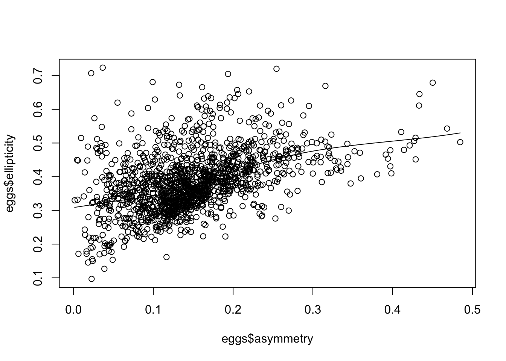

GitHub is an online platform for hosting and sharing code. More formally it is called a software repository. It is very popular with software developers, especially those creating open-source applications, and has also been adopted whole-heartedly by many data scientists and data analysts.
GitHub has many features and uses. One of the most basic ones is to use GitHub like Dropbox to backup copies of code. GitHub also can act like a kind of web server to host websites, online books, and provide access to open source software.
Many people working on R packages use GitHub to host their package while its being developed or expanded. When a package is finished, it often is then submitted to CRAN, and the version on GitHub is used as the development version where new features are developed and tested.
You can access packages on GitHub to get the newest version before something has been submitted to CRAN, or packages that haven’t or maybe will never end up on CRAN. A package I use for teaching is called called wildlifeR and holds datasets and some functions. In this short exercise we’ll
We’ll also go to the wildlifeR website to learn more about the package.
The following functions and arguments will be used in this post:
tufte::margin_note(“speakR: In the line devtools::install_github, devtools is the package and install_github is the function contained in it.”)
The following packages will be used in this post:
In this post we’ll use the “$” operator to tell the function scatter.smooth() what to plot, which is different than how ggpubr and ggplot2 work; sigh…
The devtools package is used by many people who write R packages and includes a function for downloading other packages from GitHub.
tufte::margin_note(“devtools has a lot of dependencies so this might take a while”)
install.packages("devtools", dependencies = TRUE)Once everything is downloaded, load devtools explicitly with library()
library(devtools)## Loading required package: usethisMy GitHub site is at https://github.com/brouwern and the code for wildlifeR is at https://github.com/brouwern/wildlifeR. You can examine access the files from a web browser if you really want, but that would be kind of clumsy. Rather, we can download the package similar to as if it was on CRAN using install_github().
NOTE: You’ll probably see some red text and a LOT of black text as install_github() talks with GitHub. Totally normal.
install_github("brouwern/wildlifeR")## Skipping install of 'wildlifeR' from a github remote, the SHA1 (29f3ae31) has not changed since last install.
## Use `force = TRUE` to force installationNow we can put it all explicitly into memory
library(wildlifeR) One of the datasets in wildlifeR is called “eggs.” It has data from a paper by Stoddard et al. (2017) in Science called [Avian egg shape: Form, function, and evolution.] (http://science.sciencemag.org/content/356/6344/1249). We can plot the relationship between egg asymmetry and “ellipticity” (how elliptical or oval-like it is) using the base R function scatter.smooth(), which draws a type of regression line through the data for us (Note that the syntax for scatter.smooth() is, sadly, different than plot(),ggpubr, and other plotting functions…).
# note how data is called
scatter.smooth(eggs$asymmetry, eggs$ellipticity)
Some packages have websites that summarize the package contents. This allows you to preview them without downloading them, and provides a cleaner interface to the help files and andy tutorials (“vignettes”) than what you get within R itself.
If you visit the website for wildlifeR at https://brouwern.github.io/wildlifeR/ you can find out information on each dataset and function under the “Reference” tab, and see how the datasets and functions are used under the “Articles” tab.
That’s it. You now have the super power of being able to access any R package from GitHub. This is super useful if you need to try out the developement version of a package or use one that isn’t yet - or won’t be - released on CRAN. Sometimes researchers we’ll bundle up their analyses as an R package on post it to GitHub to allow others to easily explore and replicate their analyses.